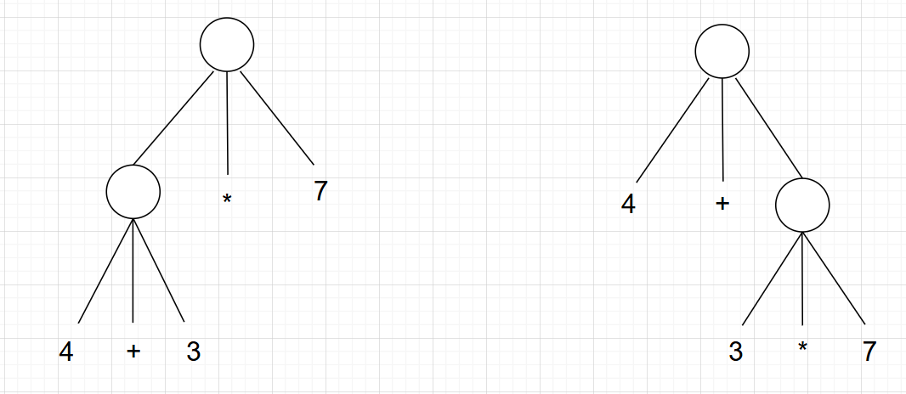
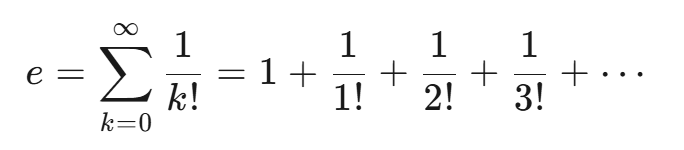
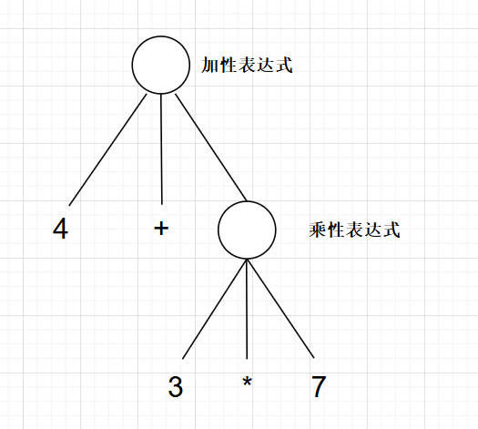
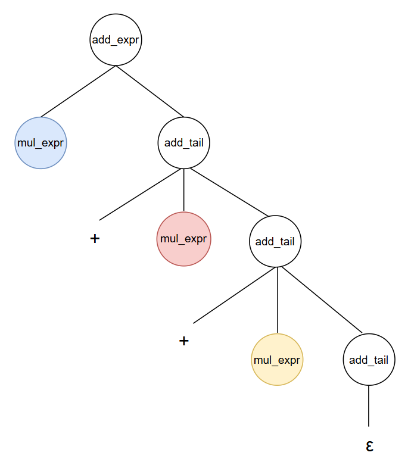

第4天：语法分析之定义文法
第4天：语法分析之定义文法
经过前面的铺垫，我们终于可以为 csub 定义文法了。
首先，定义起始符号，也就是语法分析树的树根，就叫 <program> 吧 （当然，你可以换成自己喜欢的名字）。
然后，回忆一下一般的 C 语言程序是由什么构成的。我们从头开始，首先是一些 #include “xxx.h”,因为我们的 csub 不具备预处理功能，所以这个语法要素可以忽略。接下来，可能是全局变量的定义或者声明，还可能有函数的声明；最后就是每个函数的定义。
由此可以得出，一般的 C 语言程序包括变量声明、变量定义、函数声明、函数定义。
先复习一下 C 语言中声明和定义的概念。
声明（Declaration）：告诉编译器“某个名称（变量/函数）的存在及其类型”，但不一定分配存储空间（变量）或提供实现（函数）。声明可以重复多次（只要类型一致）。
定义（definition）：是声明的一种特殊形式，除了声明名称和类型外，还会分配内存（变量）或提供实现（函数）。定义只能有一次。
声明（Declaration）和定义（definition）的关系是 “声明包含定义”。定义一定是声明，声明未必是定义。
既然声明的范围更大，不妨把变量声明、变量定义、函数声明、函数定义都统称为声明。
可以说，<program> 是由一个个声明构成的。如果用 <global_decl> 表示声明，那么 <program> 的产生式是
1 | |
这是一个递归定义。当然，程序是由有限的声明构成的，所以还应该加上
1 | |
需要说明的是，<global_decl> 表示全局声明，也就是文件作用域的声明。因为我们知道，函数里面也可以有声明，这是后面的内容。
接下来，我们把注意力放在 <global_decl>上，看看这个非终结符怎么分解。
变量的声明与定义
1 | |
需要说明的是，对于函数声明，加不加extern效果相同（因为函数默认是外部链接）；
说句题外话，为增强代码的可读性，有人习惯这样用：如果这个函数定义在其他模块，当本模块要引用的时候，声明的时候加 extern；如果这个函数就在本模块定义，则声明的时候不加 extern。
总体来看，<global_decl> 可能以 extern 开头，也可能不是。另外，除去 extern，都是以类型开头，所以
1 | |
“…” 这部分，就叫 <decl> 吧。
接下来的任务是拆分 <decl>
从大类上说， <decl>可以分为变量（包括基本变量、指针变量、数组变量）和函数两大类。
所以 <decl> -> <var_decl> | <fun_decl>
先不考虑函数，仅就变量的定义，就可以列出很多例子：
1 | |
需要说明的是， csub 仅支持一维数组，数组元素的类型只能是整形或者字符形； csub 仅支持一级指针，指针仅可以指向基本类型（整形、字符型）的变量。
经过观察，多个标识符之间用逗号分隔。所以，先从逗号处拆开。
1 | |
comma 表示终结符 “,”
semico 表示终结符 “;”
现在尝试拆 <var_item>
举两个例子：
举两个例子（关注下面的 *p2 还有 b[3]）：
1 | |
规律就是， <var_item> 肯定含有标识符，也就是变量的名字；
如果是指针，标识符的前面会有“*”；如果是数组，标识符的后面会有“[…]”
另外，变量还可以选择是否初始化，如果初始化，还会有 “= …”部分。
所以得到：
1 | |
mul 是终结符，表示 *； ident 也是终结符，表示标识符；
若是指针就用第二个产生式，否则用第一个产生式。
<arr_len> 表示 “[…]”部分;
<var_init> 表示 “= …”部分；
细心的读者会发现，按照第二个产生式 <var_item> -> mul ident <arr_len> <var_init> 可以推导出 *p[10]
也就是说从语法上讲，csub 支持指针数组，即元素类型是指针的数组。
如果不支持，<var_item> 的产生式应该这么写
1 | |
考虑再三，我决定用前面的写法，因为以后很可能给 csub 增加这个功能。
目前的做法是让 *p[10] 这种代码通过语法分析，但是在语义分析阶段报错“数组元素的类型只能是基本类型”。
接下来看看 <arr_len> 、<var_init> 都是什么。
1 | |
lbracket num rbracket 是 3 个终结符，分别表示 “[”、 数字常量、“]”
也可以省略元素个数，所以有第二个产生式。
如果不是数组，我们让 <arr_len> -> ε
1 | |
<var_init> 代表变量的初始化部分，也可以没有，所以 <var_init> 可以推导出 ε
assign 是终结符 “=”，赋值运算符。
1 | |
<expr> 代表表达式 ，后面会深入讨论。
<arr_init_list> 表示数组的初始化列表，例如{1，2，3}
如果有句代码int a[] = {1,2,3};在语义分析的时候，我们得知数组有 3 个元素。
但是如果写成 int a[]; 这就不对了，虽然语法分析可以过关，但是语义分析的时候会报错。
我们继续拆分 <arr_init_list>
1 | |
如果是字符数组，可以用常量字符串初始化。
例如char name[] = "Tom and Jerry";
STRING 是终结符，表示字符串常量。
lbraces 表示终结符 “{”，rbraces 表示终结符 “}”
<elements> 还可以继续拆：
1 | |
虽然 C 语言支持 int a[3] = {1, }; 这样的写法，但是 csub 不支持，必须写成int a[3] = {1, 2, 3};
如果 [] 内指定的数目和初始化列表的元素个数不等，csub 会在语义分析的时候报错。
需要说明的是，全局变量和局部变量的定义还是有点区别的。
1 | |
以上都是全局变量的定义。第 3 行和第 5 行是错误的，因为全局变量必须用常量初始化。
第 4 行在 C 语言看来是没有问题的，但是 csub 不支持。
但是，把这些代码放到函数里面就不一样了。
1 | |
第 3 行和第 5 行都是合法的。
同一个语句，看来我们需要区分是哪个作用域。不过别着急，作用域分析是语义分析的任务。
所以，语法分析的时候，第 3 行和第 5 行的代码都是合法的。
所以，前文变量或数组的初始化，用的是产生式
<init_expr> -> <expr> 和 <ele> -> <expr>
上面讨论的是不同作用域内变量定义的区别，下面我们看看不同作用域内变量声明是不是也有区别。
1 | |
如上面所示，变量 a 是在其他文件定义的，如果本文件要用，声明一般会放在本文件开头，也可以放在使用 a 的函数里面。
根据前面三个代码片段可知，在产生式上，不管是文件作用域还是函数里面，变量的声明和定义是一样的。如果有区别，那是语义分析的事情，语法分析就不用操心了。
用非终结符 <local_decl> 表示函数内部的变量定义或声明，有
1 | |
现在，我们把已经构造好的产生式总结一下：
1 | |
另外，再啰嗦一下。标准 C 支持函数和变量的混合声明，也支持一次声明多个函数。
例如：
1 | |
但是，很少有人这么写，而且写出来可读性很差。所以，我们的 csub 不支持类似的声明。
表达式
现在，需要讨论 <expr> 怎么分解。
对于表达式，首先要解决的是运算符的优先级问题。
以“4 + 3 * 7”为例，如何构造语法分析树呢？
下图有两种语法分析树，圆圈表示某个非终结符。

因为乘法的优先级高，所以应该先算 3 * 7。显而易见，左边的树是错误的，右边的树才正确。
由此可以得出结论：越靠近底层的（离树根越远的）非终结符，优先级越高。
另外，如果是同一优先级，还需要考虑结合性。
以“1+2+3”为例， 2 的左边和右边都是“+”， 优先级一样，但是因为加法运算是左结合，所以 2 被左边的 “+” 吸引，应该先计算 1+2；
C 语言的运算符中，左结合的很多，右结合的很少。赋值运算符是一个典型的右结合的例子。
以“a = b = 2”为例，b 被右边的“=”吸引，所以先计算 b = 2，这个表达式的计算结果是变量 b 被赋值后的值, 也就是 2，然后计算 a = 2；
接下来，以加性表达式为例，讨论如何处理结合性。
加性表达式是一种由加法运算符（+）和减法运算符（-）组成的表达式，用于对操作数进行算术加减运算。
乘性表达式是指由乘法运算符 (*)、除法运算符 (/) 和取模运算符 (%) 组成的表达式。
例如，1+2+3+...+100 是加性表达式;
欧拉数（自然对数的底） e 也可以展开成加性表达式：

在 C 语言中，乘性表达式的优先级比加性表达式的优先级仅高一个级别。
如果把前文图中的非终结符补全，应该是这样的：

<add_expr> 表示加性表达式（additive expression）. <mul_expr> 表示乘性表达式（multiplicative expression）.
直观上看，<add_expr> 可以分解为 1 个 <mul_expr>，或者 2 个到多个 <mul_expr> 相加。为了叙述方便，咱们只考虑加法，不考虑减法。
1 | |
采用递归定义，上面的产生式可以变形为：
1 | |

请看图中红色的 <mul_expr> ，如果它和上一层的 <mul_expr>（蓝色）结合，就是左结合；如果它和右边的 <add_tail>（黄色）结合，就是右结合；
所以，产生式并不影响结合性。结合性可以在语义分析的时候处理。
如果这么说太抽象，我们看一个简单的例子。
解析表达式“1+2+3+4”
如果是左结合，计算过程是这样的：
- 先把 1 拆出来，再拆 +2， 计算 1+ 2 = 3；
- 继续拆 + 3， 计算 3+3 = 6；
- 继续拆 + 4， 计算 6 + 4 = 10；
没有什么可以拆的，计算完毕。
如果是右结合，计算过程是这样的：
1）先拆 1，再拆 +，把 2+3+4 作为一个整体，求 2+3+4 的值；
2）为了求 2+3+4 的值，先拆 2， 再拆 +， 把 3+4 作为一个整体，求 3+4 的值
3）为了求 3+4 的值，先拆 3， 再拆 +，求 4 的值；
4）拆 4， 发现没有什么能拆了，那么就返回 4 给 步骤3）
回到 3）计算 3 + 4 = 7，返回 7 给步骤 2）
回到 2）计算 2 + 7 = 9；返回 9 给步骤 1）
回到 1）计算 1 + 9 = 10；
计算完毕。
csub 支持的运算符及优先级
到此，可以构造表达式的文法了，不过要做一个准备工作，就是把 csub 支持的运算符分类，排出优先级。
下表就是 csub 支持的运算符，优先级越高，数字越小。
| 运算符 | 优先级 | 结合性 | 说明 |
|---|---|---|---|
| （） | 1 | 括号；基本表达式（primary expression） | |
| ++，–，[],() | 2 | 左 | 后自增，后自减，数组下标，函数调用；后缀表达式（postfix_expression） |
| ++， --， +， -， ！， *， &， sizeof | 3 | 右 | 前自增，前自减，取正，取负，逻辑非，解引用，取地址，求尺寸；一元表达式（unary expression） |
| *，/，% | 4 | 左 | 乘性表达式（multiplicative expression） |
| +，- | 5 | 左 | 加性表达式（additive expression） |
| >, >=, <, <= | 6 | 左 | 关系表达式（relational expression） |
| ==,!= | 7 | 左 | 等性表达式（equality expression） |
| && | 8 | 左 | 逻辑与表达式（logical and expression） |
| || | 9 | 左 | 逻辑或表达式（logical or expression） |
| = | 10 | 右 | 赋值表达式（assignment expression） |
赋值表达式
我们从赋值表达式开始构造。
模仿前文构造 <add_expr> 的文法。
1 | |
<assign_expr> 表示赋值表达式，它可以推导出比它高一个优先级的逻辑或表达式（用非终结符 <logical_or_expr> 表示）。
也可以推出类似于 “a = b = c = d = … = z” 这样的表达式。
assign 表示终结符“=”；
相信有的读者会问，难道说类似于 a || b = c的表达式也合法吗？
从语法角度讲，合法，因为符合我们的产生式。但是从语义角度讲不合法，因为赋值表达式的左操作数必须是一个左值，而这里的 a || b 是一个右值。没有关系，在语义分析的时候，编译器会报错。
逻辑或表达式
1 | |
or 表示终结符 “||”;
相信读者都观察出来了，二元操作符构成的表达式都是这个套路：先分解出一个更高优先级的表达式 <xxx_expr>，再分解出 0 个到多个 <op> <xxx_expr> 连接在 <xxx_expr> 后面。 这里的<op>表示某种二元操作符。
逻辑与表达式
1 | |
“and” 表示终结符 “&&”
<equ_expr> 表示等性表达式。等性表达式是编程语言中用于比较两个操作数的值是否相等或不相等的一种表达式，例如 a == 1 或者 x >= 0;
等性表达式
1 | |
equ 表示终结符 “==”； nequ 表示终结符 “!=”
<relation_expr> 表示关系表达式，例如 a >= 5 m < 3
关系表达式
1 | |
gt 表示终结符“>”； ge 表示终结符“>=”； lt 表示终结符“<”； le 表示终结符“<=”
加性表达式
1 | |
add 表示终结符“+”， sub 表示终结符“-”
乘性表达式
1 | |
mul、div、mod 分别表示终结符“*”、“/”、“%”
一元表达式
一元表达式的操作数只有一个，且运算符在操作数的左边，结合性为右结合。 csub 支持的一元运算符包括前自增（++），前自减（–），取正（+），取负（-），逻辑非（！），解引用（*），取地址（&），求尺寸（sizeof）。
例如： ++a ****p sizeof(m) -100 &i
比一元表达式高一个优先级的是后缀表达式（用 <post_expr> 表示）。
<unary_op> 表示一元操作符，其产生式为：
1 | |
依然类比加性表达式：
-
加性表达式可以推导出比它高一个优先级的乘性表达式
-
用“+” 连接两个乘性表达式就得到加性表达式；
-
在 2 的基础上，可以再往右边连接 “+ 乘性表达式”或者往左边连接 “乘性表达式 +”，结果还是加性表达式
把上面三点变换一下：
- 一元表达式可以推导出比它高一个优先级的后缀表达式
- 把 <unary_op> 放在后缀表达式左边，就得到一元表达式
- 在 2 的基础上，再往左边放置 <unary_op>，结果还是一元表达式
所以，<unary_expr> 可以推导出 0 到多个 <unary_op>，最右边是 <post_expr>
<unary_expr> 的产生式为：
1 | |
换句话说，对于一元表达式，可以拆出来 0 个到多个 <unary_op>，直到没有 <unary_op>，剩下来的就是 <post_expr>
例如-+-+*p++,解析的时候，先拆出最左边的负号，再拆出正号，再拆出负号，再拆出正号，再拆出“*”，没有什么可以拆了，剩下的p++就按照后缀表达式解析。
另外，++++p，虽然合乎产生式，但是有问题：++ 的操作数必须是左值，++p 没有问题，但是它的结果不是左值，所以 ++++p 是错误的。这个我们放到语义分析的时候处理。
后缀表达式
后缀运算符有后自增，后自减，数组下标，函数调用。
模仿一元表达式，可以写出后缀表达式的产生式
1 | |
细心的读者发现，这不是左递归了吗？没错。
前面的章节讲过，对于左递归产生式
可以改写为：
就是 <post_expr>， 是 <post_op>， 是 <primary_expr> ，所以后缀表达式的产生式可以改写为：
1 | |
改写后，左递归没有了。
lparen <realarg> rparen 表示函数调用的参数列表；
lparen 和 rparen 分别表示终结符 “(” 和 “)”
1 | |
<realarg> 可以为空，也可以由 1 到多个参数组成，之间用逗号分隔。
<arg> 又是什么呢？往高优先级说，可以是标识符、常量、函数的返回值等，往低优先级说，可以是任何表达式。所以有：
1 | |
基本表达式
基本表达式通常作为其他表达式的基本构件而存在。基本表达式包括标识符、各种常量和括号括住的表达式。
1 | |
<literal> 是字面量，包括十进制整数、字符串常量、字符常量。
到了这里，可以讨论<expr> 的产生式了。因为<expr> 代表任何表达式，所以
1 | |
赋值表达式的优先级最低，它可以推导出任何表达式；而<expr>又可以推导出赋值表达式，所以<expr>代表任何表达式。
函数声明与定义
前文已经有了产生式
1 | |
现在看看 <fun_decl> 怎么拆解。
1 | |
最左边的 “int” 是由<type>推导出来的，<fun_decl> 以标识符或者 * 开头。
不管是函数声明还是函数定义，特征都是标识符后面接()，然后是;（对于声明）或者{…}（对于定义）。
1 | |
先看 <fun_body>，如果是函数定义，就用产生式 <fun_body> -> <block>, <block>表示花括号及里面的语句；
如果是函数声明就用 <fun_body> -> semico
<para_decl> 表示形式参数列表。为了降低难度，我们规定，形式参数名字不能省略；
如果参数是数组，可以用 int *a 或者int a[10]或者int a[]；
需要注意，在 C 语言的早期版本（如 K&R C）中：void foo();仅表示函数返回 void类型，但是参数列表未指定（可能接受任意数量和类型的参数）。
csub 也允许void foo()这种写法，但是会认为参数列表是 void;
<para_decl>的产生式如下：
1 | |
对于 <para_item> 的分解，比较简单
1 | |
前面的章节说过，针对 LL（1) 文法构造的分析器，在每一步分析时，只需要向前查看 1 个输入符号就可以判断使用哪条产生式规则。
如果把 <fun_decl> 和 <var_decl> 的产生式放在一起，就会发现问题。
1 | |
我们发现，<fun_decl> 的开头是ident或者mul ident ，<var_decl> 的开头也是这样。
问题来了，当读入的符号是标识符或者 “*” 的时候，应该用哪个产生式呢？是 <fun_decl> 还是 <var_decl>？
此时，就需要用之前讲的“提取左公因子”的方法来改写产生式。
用 <decl_head> 表示左公因子 “ident | mul ident”
有 <decl_head> -> ident | mul ident
把 <fun_decl> 除去 <decl_head> 的部分叫做 <fun_decl_tail> ,那么有
<fun_decl_tail> -> lparen <para_decl> rparen <fun_body>
同理，把 <var_decl> 除去 <decl_head> 的部分叫做 <var_decl_tail>，那么有
<var_decl_tail> -> <arr_len> <var_init> <var_list>
把这些产生式写在一起：
1 | |
改写之后，展开<decl> 的时候，先处理 <decl_head>，再判断下一个符号，如果是 “(” 就用 <fun_decl_tail>，如果不是，就用 <var_decl_tail>
因为提取了左公因子，所以前面的 <local_decl> -> extern <type> <var_decl> | <type> <var_decl>
要修改为：
1 | |
现在，我们考虑函数里面的函数声明和定义，因为 C 语言不支持函数的嵌套定义，所以，函数定义里面只能声明函数，不能再定义函数。
如果照猫画虎，根据上面的式子得出 <local_decl> 还可以推导出：
1 | |
这就不对了。因为
1 | |
由此可见， 这种情况下 <fun_body> 不能推导出 <block>；
所以, 只能用 lparen <para_decl> rparen semico代替上面的 <fun_decl_tail>，<local_decl> 应该写成：
1 | |
再加上前面推出的， <local_decl> 的产生式为：
1 | |
语句
csub 的语句包括表达式语句，if-else、switch-case 分支语句，while、for、do-while 循环语句，以及 break、continue 和 return 语句。
1 | |
<break_stat> 和 <continue_stat> 很简单，后面只能是分号；
1 | |
return 后面应该是表达式，然后是分号。
1 | |
<expr_stat> 代表表达式语句。表达式语句可以是空语句（仅有一个分号）。例如：
1 | |
1 | |
下面分解 <while_stat>
while 后面接 ()，() 里面必须是表达式。
下面的写法都不对，用 gcc 编译会报错。
1 | |
所以， <while_stat> 的产生式为：
1 | |
<block> 表示花括号及里面的内容；
<do_while_stat> 的产生式为：
1 | |
现在看看<for_stat>
先举个例子：
1 | |
把 int i = 0; 称为 <for_init>
把i < 100; 称为 <for_cond>（取单词 condition 的前几个字母，意思是条件）
把++i 称为 <for_iter>（取单词 iteration 的前几个字母，意思是迭代）
1 | |
<for_init> 可以是局部变量定义，也可以是表达式语句；
<for_cond> 是表达式语句;
<for_iter> 是表达式或空；
下面是 if-else 语句。
1 | |
else 语句可以没有，所以 <else_stat> 可以推出 ε
到此，<block> 还没有分解。
1 | |
<subprogram> 是什么呢？
只要是 {} 里面可以写的，都是 <subprogram> 可以推导出的。
<subprogram> 也是递归定义。
1 | |
最后是 switch-case 语句。
先举个例子：
1 | |
1 | |
<case_stat> 是递归定义。
colon 表示终结符 “:”
<case_label> 只能是整形常量或者字符常量。
这样就可以了吗？
1 | |
请问这样的代码可以编译过吗？
我用的 gcc 版本是11.4.0，编译命令是 gcc -std=c17 -pedantic-errors xxx.c
第 4 行会报 error: a label can only be part of a statement and a declaration is not a statement
也就是说，case 语句不能是 declaration（包括定义和声明）；
但是，如果这样写就是合法的：
1 | |
所以，若是为了对标 C 语言标准，<case_stat> 的产生式要改一改。 把前面的 <subprogram> 替换成 <subprogram_in_switch>
1 | |
<subprogram_in_switch> 里面不能有 <local_decl>，但是可以有 <block>
至此，我们完成了 csub 所有文法的定义。接下来，就是把所有的产生式转换成代码，完成语法分析。
需要说明的是，同一个语言完全可以拥有多套文法，只要它们最终能生成一致的语义结果。
当你读完本书，入门编译原理后，相信你可以构造出更优雅的文法。
本文到这里就结束了。谢谢大家的阅读。